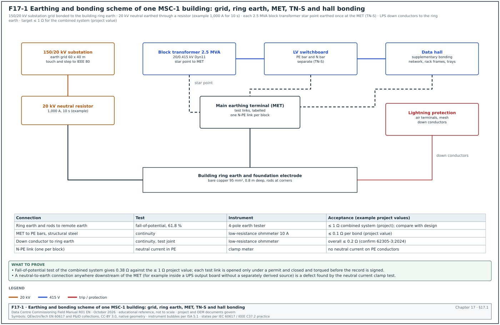
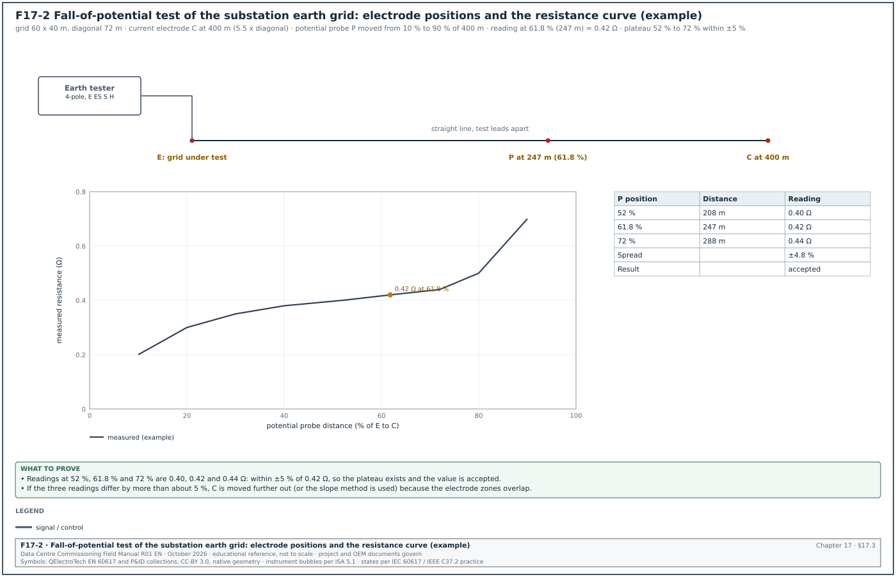
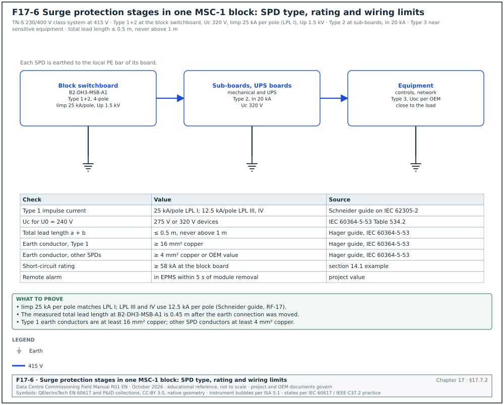
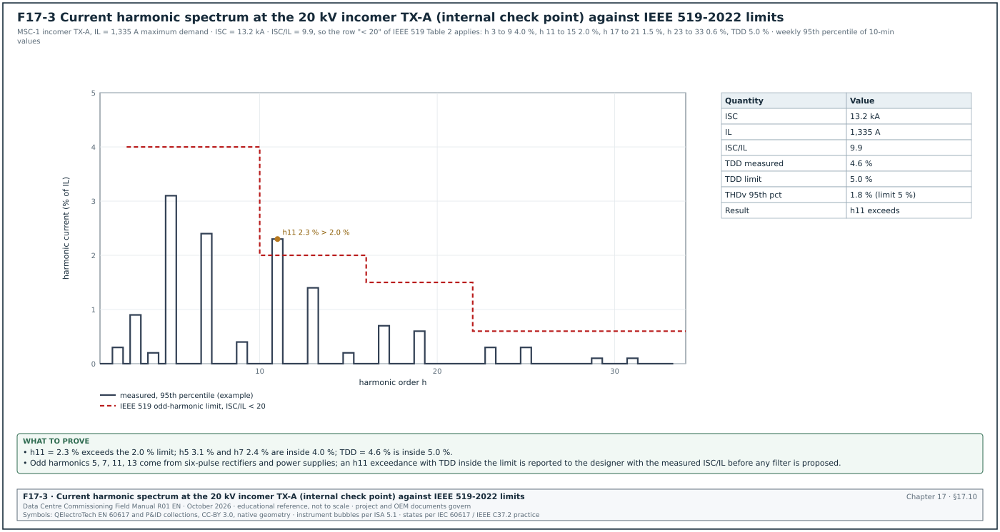
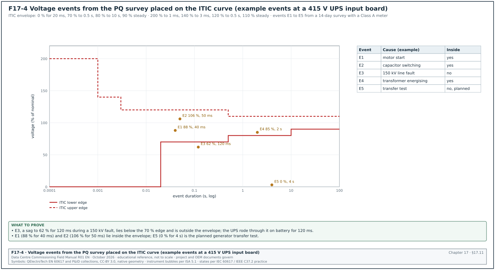
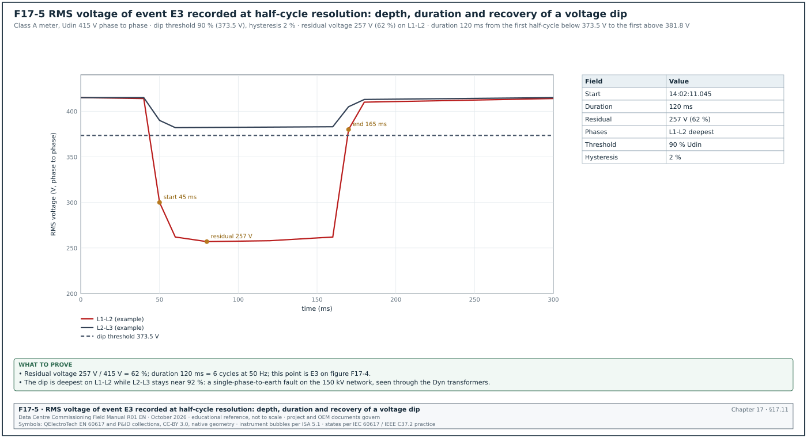

17.0Scope of this chapter
This chapter covers three related subjects that a commissioning manager must prove before a data-centre building is handed over. They are the earthing and bonding system, the lightning protection system (LPS) with its surge protective devices (SPD), and the power quality (PQ) of the supply and of the installation. For each subject the chapter gives what the system is and why it exists, the tests, the instruments, the applied values and the acceptance values with their sources. It also gives the record fields, filled examples and the common errors.
- Earthing systems. The earthing arrangement of a campus: substation grid, building ring earth, main earthing terminal (MET), TN-S distribution and data-hall bonding.
- Soil resistivity. The Wenner method and its use in the design check.
- Earth electrode resistance. The fall-of-potential method of IEEE 81 with the 61.8 % rule, the slope method, the clamp-on method and their limits.
- Bonding and continuity. Low-resistance measurements of protective and bonding conductors.
- Touch and step voltage. When and how they are measured.
- Lightning protection. IEC 62305 risk assessment, lightning protection levels (LPL) and LPS classes, rolling sphere and mesh methods, inspection and tests.
- Surge protection. IEC 61643-11 SPD types, installation checks and records.
- Power quality. IEEE 519 harmonic limits, IEC 61000-4-30 Class A instruments, IEC 61000-4-7 harmonics, IEC 61000-4-15 flicker, voltage dips and swells, the Information Technology Industry Council (ITIC) curve, the PQ survey procedure and the review of PQ data.
Documents and standards used: IEEE 81-2025 (supersedes 81-2012; measuring earth resistivity, ground impedance and earth surface potentials), IEEE 80 (safety in AC substation grounding), IEEE 142 (grounding of industrial and commercial power systems), IEC 60364-5-54, IEC 60364-6 and PUIL 2020 (SNI 0225). The chapter also uses IEC 62305-1 to -4 (with IEC 62305-3:2024), IEC 61643-11:2025 and IEC 61643-12, IEEE 519-2022, IEC 61000-4-30:2025, IEC 61000-4-7 and IEC 61000-4-15. It also uses IEC 62586-2, EN 50160, the ITIC (CBEMA) curve note, SEMI F47 and the MSC-1 numbers in case_ledger.json. Values not checked against the current edition are marked for confirmation, with the document and the table or clause named in the bracket.
17.1Earthing systems on a data-centre campus


17.1.1What earthing does
Earthing has three functions on a data-centre campus. First, it carries fault current back to the source so that protective devices operate quickly (protective earthing). Second, it limits the voltages that people can touch during a fault (touch and step voltage). Third, it provides a common reference and a low-impedance path for lightning and surge currents (functional and lightning earthing). On MSC-1 one connected system serves all three functions; separate, unbonded earth electrodes on the same site create dangerous voltage differences during a fault or a lightning strike.
Figure F17-1 shows the earthing and bonding scheme of one MSC-1 building.
17.1.2Parts of the MSC-1 earthing system
| Part | Description (MSC-1 example) | Design basis | Commissioning test |
|---|---|---|---|
| Substation earth grid | buried copper mesh under the 150/20 kV substation, 60 × 40 m, with rods | IEEE 80 touch and step voltage study | fall-of-potential (17.3), touch and step (17.5) |
| 20 kV neutral earthing | 80 MVA transformer neutral through a neutral earthing resistor (NER) (example 1,000 A, 10 s) | earthing study, relay settings | NER resistance, connection continuity |
| Building ring earth | bare copper conductor around each building, about 0.8 m deep, with rods at corners, bonded to the foundation steel | IEC 62305-3 type B arrangement, IEC 60364-5-54 | fall-of-potential of the combined system, continuity |
| Main earthing terminal (MET) | copper bar in each electrical room with removable test links | IEC 60364-5-54 | continuity, test link resistance |
| Block transformer star point | each 2.5 MVA Dyn11 transformer LV star point connected to the MET through one N-PE link | TN-S system, one N-PE link per source | visual, test of neutral current in the protective earth conductor (PE) |
| Protective conductors | PE in every circuit, PE bars in every board | IEC 60364-5-54 sizing | continuity, earth fault loop impedance |
| Data-hall supplementary bonding | bonding of rack frames, cable trays, raised floor or overhead structure, pipework | ANSI/TIA-607 or project telecom bonding standard | continuity |
| Lightning protection | air terminals, roof mesh, down conductors, test joints | IEC 62305-3 | continuity, earth resistance at test joints |
17.1.3TN-S distribution and the single N-PE link
In a TN-S system the neutral (N) and protective earth (PE) conductors are separate from the source to every load. The neutral is connected to earth at one point only, at the source (the transformer star point or the MET). If the neutral is connected to PE at a second point, part of the neutral current returns through the PE conductors, cable screens and building steel. This current causes magnetic fields, corrosion, noise on data cables and wrong readings on earth-fault protection.
Check: With the block under normal load, clamp the PE conductor of each outgoing feeder and the main bonding conductor. Current in the PE conductors above a few amperes points to a second N-PE connection downstream. The usual causes are a neutral bar link left in a sub-board, or an equipment neutral terminal bonded to its frame. Another cause is an uninterruptible power supply (UPS) output configured as a separately derived source without a matching design.
Worked example: Block B2-DH3-A1 at 1,200 A load. Clamp readings: main N-PE link 4.1 A, PE of feeder QF2 (mechanical board) 18.6 A, PE of other feeders below 0.5 A. The mechanical board neutral bar is found linked to its PE bar by a factory link that should have been removed. After removal, the QF2 PE current reads 0.3 A and the main link 22.5 A (the unbalanced current of the block returning to the star point as designed).
17.2Soil resistivity measurement
17.2.1Purpose
Soil resistivity is measured before design, to size the earth grid, and during commissioning when a measured earth resistance differs from the design value. The result explains whether the difference comes from the soil or from the installation.
17.2.2Wenner four-pin method
Instrument used: Four-pole earth tester with a frequency different from 50 Hz (to reject power-frequency interference), four probes and reels of test lead.
Set-up: Four probes in a straight line with equal spacing a; the outer two inject current, the inner two measure voltage. The probe depth is small compared with a (practice: depth below a / 20).
Calculation: ρ = 2π a R, where R is the reading in ohms and a in metres. The reading for spacing a represents the soil down to a depth of about a.
Steps:
- Choose traverses. At least two traverses at right angles across the site, away from buried metal (pipes, cables, fences).
- Spacings. Take readings at a = 1, 2, 4, 8, 16 and 32 m (or as the design needs).
- Record. Spacing, reading, calculated ρ, soil condition (dry, wet), date and weather.
- Plot. Plot ρ against a. A flat curve means uniform soil; a rising or falling curve means layered soil.
Worked example: Traverse 1 at the MSC-1 substation site, after two dry days:
| Spacing a (m) | Reading R (Ω) | ρ = 2π a R (Ω·m) |
|---|---|---|
| 1 | 9.6 | 60.3 |
| 2 | 4.4 | 55.3 |
| 4 | 2.0 | 50.3 |
| 8 | 0.86 | 43.2 |
| 16 | 0.37 | 37.2 |
| 32 | 0.17 | 34.2 |
The resistivity falls from about 60 Ω·m near the surface to about 34 Ω·m at depth, which is typical of a dry upper layer over wetter clay. The design used a two-layer model with 60 and 35 Ω·m, so the soil matches the design.
17.3Earth electrode resistance: the fall-of-potential method


17.3.1Principle
The fall-of-potential method injects a test current between the electrode under test (E) and a remote current electrode (C). A potential probe (P) placed between them measures the voltage between E and P. The ratio of voltage to current is the resistance. Near E the reading is low because P is inside the voltage gradient of E; near C the reading is high because P is inside the gradient of C. Between them, where neither electrode influences the reading, the curve is flat. IEEE 81-2012 Annex C (the edition the source quotes; the IEEE 81-2025 annex was not read) shows that for a hemispherical electrode in uniform soil the true resistance is read with P at 61.8 % of the distance from E to C (RF-17 row 1).
Figure F17-2 shows the set-up and the resistance curve for the MSC-1 substation grid.
17.3.2Distances
| Electrode under test | Largest dimension D | Distance E to C (practice) | P at 61.8 % |
|---|---|---|---|
| Single rod 3 m | 3 m | at least 30 m (10 × rod length) | 18.5 m |
| Building ring earth 120 × 60 m | diagonal 134 m | 5 to 10 × diagonal: 670 to 1,340 m (impractical on most sites; see slope method) | 414 to 828 m |
| Substation grid 60 × 40 m | diagonal 72 m | 5.5 × diagonal = 400 m (MSC-1 example) | 247 m |
The distance from E to C is measured from the electrical centre of the electrode under test, which for a grid is near its geometric centre. Distances of 5 to 10 times the largest dimension are common practice for large grids; IEEE 81 discusses the required distances in detail (confirm against IEEE 81-2025; clause 8 is the number in the superseded 2012 edition). Some instrument guides use 2 to 3 times the largest dimension. At shorter distances the plateau check of 17.3.3 step 5 or the slope method decides whether the reading is valid.
17.3.3Procedure
Trigger: Earth grid or ring earth complete and backfilled; before energisation of the substation or the building.
Owner: Electrical contractor or testing contractor; witnessed by the commissioning authority (CxA).
Steps:
- Isolate the electrode where possible. For a single rod or a test point, open the test link so that the reading is of that electrode alone. For a substation grid that is bonded to the utility earth through cable screens, record the bonds. The measurement then includes them. This is the value that matters for the touch-voltage study, and the record states it.
- Lay out the line. Run the current lead to C at the planned distance in a straight line away from buried metal. Run the potential lead to P on the same line, with the two leads kept apart (several metres) to reduce mutual coupling.
- Drive probes. Drive C and P to good contact; wet them if the soil is dry.
- Measure at 61.8 %. Record the reading with P at 61.8 % of E to C.
- Check the plateau. Move P to about 52 % and 72 % and record. If the three readings agree within about ±5 %, the plateau exists (practice, RF-17 row 2).
- Full curve where needed. If they do not agree, take readings from 10 % to 90 % and plot the curve; increase the E to C distance or use the slope method.
- Second direction. Repeat on a second line at an angle of at least 90° to the first. The two results should agree within the measurement uncertainty.
- Restore. Close all test links, torque and mark them.
- Record. Fill the earth resistance record (17.3.6).
17.3.4Acceptance values
| Electrode | Acceptance value | Source |
|---|---|---|
| Substation grid | value from the IEEE 80 design study that gives safe touch and step voltages at the design fault current | project earthing study |
| Combined building earthing system on a data-centre campus | ≤ 1 Ω is a common project requirement | project specification (example) |
| LPS earth termination (type A arrangement) | ≤ 10 Ω at low frequency is the IEC 62305-3 guidance value for the overall earth termination (ABB Furse technical reference to IEC/BS EN 62305-3, RF-17 row 29) | IEC 62305-3 clause 5.4 (earth termination system) |
| Building earth electrode for a TT or TN system | value from PUIL 2020 and the protective device calculation | PUIL 2020 (SNI 0225:2020) and the project earthing calculation |
The acceptance value is the one stated in the project specification. A value from a general standard is used only where the specification refers to it.
17.3.5Worked example
Worked example: MSC-1 substation grid, 60 × 40 m, C at 400 m, test current about 30 mA at 128 Hz.
| P position | Distance from E | Reading |
|---|---|---|
| 10 % | 40 m | 0.20 Ω |
| 30 % | 120 m | 0.35 Ω |
| 52 % | 208 m | 0.40 Ω |
| 61.8 % | 247 m | 0.42 Ω |
| 72 % | 288 m | 0.44 Ω |
| 90 % | 360 m | 0.70 Ω |
The 52 %, 61.8 % and 72 % readings are 0.40, 0.42 and 0.44 Ω, within ±4.8 % of 0.42 Ω, so the plateau exists. Second line at 90°: 0.41 Ω at 61.8 %. The design study requires ≤ 0.5 Ω for the grid to keep the touch voltage below the IEEE 80 tolerable value at the design earth-fault current (example). The grid is accepted at 0.42 Ω.
17.3.6Earth resistance record fields
| Field | Type | Example |
|---|---|---|
| Electrode ID | text | MSC1-SS1-GRID |
| Electrode description and size | text | copper mesh 60 × 40 m, 24 rods 3 m |
| Method | list | fall-of-potential, 61.8 % |
| E to C distance, direction | number m, text | 400 m, bearing 090° |
| Readings at 52 %, 61.8 %, 72 % | numbers Ω | 0.40, 0.42, 0.44 |
| Second direction reading | number Ω | 0.41 |
| Test frequency and current | text | 128 Hz, 30 mA |
| Soil condition and weather | text | dry, no rain for 2 days |
| Bonds connected during test | text | 150 kV cable screens bonded |
| Instrument, SN, certificate | text | earth tester SN 44211, cert due 2027-04-01 |
| Acceptance value and source | text | ≤ 0.5 Ω, earthing study MSC1-SS1-ES-001 rev B |
| Result, signatures | text | pass; contractor, CxA |
17.4Other earth resistance methods
17.4.1Slope method
For large electrodes, C sometimes cannot be placed far enough away. In that case the slope method uses readings at 20 %, 40 % and 60 % of the E to C distance to estimate where the true value lies. The slope coefficient is μ = (R60 - R40) / (R40 - R20). The Megger table "Values of DP / DC for various values of μ" is in the Megger guide "Getting Down to Earth" and is reproduced in the Megger DET2/3 user manual. For each μ it gives the ratio Pt / C, which is the potential probe position that gives the true resistance. Examples from that table: μ = 0.40 gives 0.643, μ = 0.80 gives 0.580 and μ = 1.20 gives 0.494 (RF-17 row 30). If μ is above the last value in the table, C is moved further away. The method assumes uniform soil and a hemispherical electrode approximation.
17.4.2Clamp-on method
A clamp-on earth tester induces a voltage in a closed earth loop and measures the current. It reads the resistance of the loop, which equals the resistance of the clamped electrode only when the rest of the loop (many parallel electrodes) has a much lower resistance.
| Condition | Clamp-on result |
|---|---|
| Single electrode with no parallel path | no loop, no valid reading |
| One electrode in a large multi-earthed system (for example a lighting pole earth bonded to the PE network) | close to the electrode resistance |
| Ring earth or grid with internal loops | reads the loop of conductors, near zero; not the earth resistance |
| Two electrodes only, bonded to each other | reads the sum of both |
The clamp-on method cannot measure a substation grid or a building ring earth. It is useful for routine checks of individual rods in a multi-earthed system and for loop continuity.
17.4.3High-current injection
For a large substation grid connected to remote earth through cable screens and overhead earth wires, IEEE 81 describes current injection methods using a remote circuit (for example a de-energised line) with test currents of tens of amperes. The resistance is calculated from the earth potential rise and the current that flows into the soil (the split factor). This is a specialist test; the earthing designer specifies it when the touch-voltage design depends on it.
17.5Touch and step voltage, bonding and continuity
17.5.1Touch and step voltage measurement
Where the earthing study shows touch or step voltages close to the tolerable limits of IEEE 80, a measurement is made. A current is injected into the grid against a remote electrode. The voltage between a hand position (structure) and a foot position (a weighted plate on the ground 1 m away) is measured and scaled to the design fault current. The acceptance value is the tolerable touch or step voltage from the study, which depends on the fault clearing time and the surface layer (for example crushed rock).
17.5.2Continuity of protective and bonding conductors
Instrument used: Low-resistance ohmmeter with at least 200 mA test current (IEC 61557-4 instruments), or a digital low-resistance ohmmeter (DLRO) at 10 A for main bonds.
Method: Measure between the MET and each bonded item (PE bar of each board, structural steel, pipework entry, cable tray, raised floor grid, rack frame). Null the leads first.
Acceptance:
| Bond | Acceptance (example project values) | Source |
|---|---|---|
| MET to PE bar of each board | ≤ 0.1 Ω (practice; the continuity must also give an earth fault loop impedance that meets the protective device disconnection time) | project specification; IEC 60364-6 |
| Data-hall supplementary bonds (rack, tray, floor) | ≤ 0.1 Ω between any bonded item and the hall bonding bar (value from the project telecom bonding specification named in the contract) | project specification |
| LPS down conductor joints and natural components | overall ≤ 0.2 Ω is commonly quoted for continuity (confirm against the steel-reinforcement continuity requirement of IEC 62305-3:2024 and its Annex D; the 2024 edition has no Annex E) | IEC 62305-3 |
| Pipe bonding at building entry | ≤ 0.1 Ω (example) | project specification |
Worked example: Data hall B2-DH3 bonding test, 100 racks sampled at 20 racks, cable trays at 10 points, raised floor at 6 points, coolant distribution unit (CDU) frames 4. Highest reading 0.064 Ω at rack R-17 (bond via a 6 mm² conductor to the overhead bonding conductor). One tray section read 2.3 Ω because a tray splice was painted under the bonding jumper. The jumper was refitted on bare metal with a serrated washer and read 0.012 Ω.
17.5.3Earth fault loop impedance
For each final circuit and sub-main, the earth fault loop impedance (Zs) is measured with an installation tester. It is compared with the maximum Zs that gives disconnection within the required time for the protective device (project value: the designer calculates the maximum Zs from the protective device data for the disconnection times of IEC 60364-4-41 and PUIL 2020). On large sub-mains the designer calculates the value from the cable data, and the PE continuity measurement confirms it. Loop testers lose accuracy below about 0.05 Ω.
17.6Lightning protection to IEC 62305
17.6.1What the LPS protects against
A lightning strike to a building can damage the structure (fire, mechanical damage), injure people by touch and step voltages, and damage electrical and electronic systems through the lightning current and the induced surges. IEC 62305 deals with these in four parts: general principles (Part 1), risk management (Part 2), physical damage and life hazard (Part 3, the external LPS) and electrical and electronic systems (Part 4, the surge protection measures).
17.6.2Risk assessment and protection level
IEC 62305-2 calculates the risk of loss for the building from the lightning flash density of the site, the building dimensions, its contents and the services entering it. The result selects the lightning protection level (LPL) and the protection measures. Jakarta has a high flash density, so data-centre buildings there commonly require LPL I or II (project risk assessment governs). The commissioning manager (CxM) checks the risk assessment in five steps:
- Flash density. The ground flash density used matches a published or measured value for the site.
- Building data. Dimensions, height of roof equipment and construction match the as-built building.
- Services. Every incoming power and telecom line is listed with its length and type.
- Loss types. Loss of human life (R1) and loss of service to the public or of economic value are assessed as the owner requires.
- Measures. The selected LPS class and SPD measures appear on the drawings and in the installation.
| LPS class | Rolling sphere radius | Mesh size | Minimum lightning current the air terminals intercept | Interception probability |
|---|---|---|---|---|
| I | 20 m | 5 × 5 m | 3 kA | 99 % |
| II | 30 m | 10 × 10 m | 5 kA | 97 % |
| III | 45 m | 15 × 15 m | 10 kA | 91 % |
| IV | 60 m | 20 × 20 m | 16 kA | 84 % |
Source: IEC 62305-1 and -3 values as summarised in RF-17 row 4. The maximum current parameters used for component sizing (commonly quoted as 200 kA for LPL I, 150 kA for LPL II, 100 kA for LPL III and IV) are to be confirmed against IEC 62305-1 Table 3.
17.6.3External LPS inspection and tests
| Component | Check | Test | Acceptance |
|---|---|---|---|
| Air terminals and roof mesh | positions match the rolling sphere or mesh design; all roof equipment (dry coolers, chillers, antennas) inside the protected zone or bonded | visual against drawing; photographs | as design |
| Down conductors | number and spacing as design (10 m for class I and II, 15 m for III, 20 m for IV: IEC/BS EN 62305-3 down-conductor spacing table as reproduced in the ABB Furse technical reference, RF-17 row 33) | visual, measure spacing | as design |
| Test joints | one per down conductor, accessible, labelled | continuity across joint; earth resistance with the joint open | continuity ≤ 0.2 Ω overall (confirm against IEC 62305-3:2024 5.3.6, test joints, and Annex D); earth resistance as design |
| Natural components (steel frame, rebar) | continuity of the structure used as a down conductor | DLRO between roof and foundation earth | as design (overall ≤ 0.2 Ω commonly quoted; confirm against the steel-reinforcement continuity requirement of IEC 62305-3:2024 and its Annex D) |
| Separation distance | distance between LPS conductors and internal metal or cables | measure at the points listed in the design | ≥ calculated separation distance s |
| Equipotential bonding at entry | services bonded at the entry point, directly or through SPDs | visual and continuity | as design |
| Earth termination | type B ring earth or type A rods | fall-of-potential or test-joint measurement | as design |
Worked example: Building B2 roof, 120 × 60 m, LPS class I. The mesh design is 5 × 5 m. The inspection finds that two dry-cooler fan housings, 2.8 m above the roof, are outside the protected zone of the mesh. When checked with a 20 m rolling sphere, the sphere touches their top edges without touching an air terminal. As the correction, air terminals of 1.5 m are added on the cooler frames and bonded to the mesh. The re-check shows the sphere rests on the new terminals. Continuity from each new air terminal to the nearest test joint reads 0.03 to 0.05 Ω.
17.6.4Inspection intervals
IEC 62305-3 Annex E gives maximum intervals between inspections by LPS class. For class I and II the table gives a visual inspection every year and a complete inspection every 2 years; for class III and IV it gives 2 and 4 years (IEC 62305-3 Table E.2 as reproduced on DEHN test form 2110, RF-17). The same table gives a complete inspection every year for critical situations, and its footnote includes structures with sensitive internal systems, which covers a data centre. Check that the 2024 edition keeps this table. The commissioning record is the first complete inspection and sets the baseline values for later inspections.
17.7Surge protective devices
17.7.1What an SPD does
A surge protective device (SPD) limits transient overvoltages and diverts surge current to earth. Surges come from lightning strikes to the building or to the incoming lines, from induction by nearby strikes and from switching operations. In a data centre, the information technology (IT) equipment, the UPS rectifiers, the controls and the network equipment are sensitive to surges. SPDs are coordinated in stages from the service entrance to the equipment.
17.7.2SPD types to IEC 61643-11
| Type (IEC) | Test waveform | Main parameter | Typical location on MSC-1 | Example rating (project value) |
|---|---|---|---|---|
| Type 1 | 10/350 µs impulse current | Iimp (impulse current per pole) | main LV switchboard of each block, where the building has an external LPS | Iimp 25 kA per pole for LPL I, 12.5 kA per pole for LPL III and IV (Schneider Electrical Installation Guide on IEC 62305-2, RF-17); the IEC 62305-4 calculation governs |
| Type 2 | 8/20 µs current | In (nominal discharge current), Imax | sub-boards, UPS input and output boards, mechanical boards | In 20 kA |
| Type 3 | combination wave | Uoc | close to sensitive equipment | as equipment |
| Combined Type 1+2 | both | Iimp and In | main board where space is limited | as above |
Source: IEC 61643-11:2025 and the type definitions in RF-17 row 6.


Figure F17-6 shows the three SPD stages of one MSC-1 block with the ratings and the wiring limits of 17.7.3.
Selection parameters:
- Maximum continuous operating voltage Uc. At least 1.1 × U0 for a TN system: for U0 = 240 V, Uc ≥ 264 V; 275 V or 320 V devices are common. This minimum Uc of 1.1 U / √3 (1.1 × U0) applies between line and neutral and between line and PE in a TN system. It is from IEC 60364-5-53 Table 534.2 as reproduced in the Schneider Electric Electrical Installation Guide, Figure J23 (RF-17 row 31).
- Voltage protection level Up. Below the rated impulse withstand voltage of the protected equipment, with margin for the connecting leads. For a 230/400 V system the required rated impulse voltages are 6 kV (category IV, origin), 4 kV (category III, distribution), 2.5 kV (category II, equipment) and 1.5 kV (category I, sensitive). The values are from IEC 60364-4-44 Table 443.2 as reproduced in the Schneider Electric Electrical Installation Guide, Figure J24 (RF-17 row 32).
- Short-circuit current rating. Equal to or above the prospective fault current at the point of installation (58 kA at the MSC-1 block board), with the backup fuse or breaker the original equipment manufacturer (OEM) specifies.
- Coordination. Type 1 and Type 2 devices coordinated by the OEM's stated cable length or by a combined device.
17.7.3Installation checks and tests
- Lead length. The total length of the connecting conductors (phase to SPD plus SPD to earth bar) kept as short as possible: preferably 0.5 m or less and never more than 1 m (Hager technical guide on IEC 60364-5-53, RF-17). Long leads add inductive voltage to Up.
- Conductor size. Earth conductor of a Type 1 SPD at least 16 mm² copper; conductors of other SPDs at least 4 mm² copper, or the larger OEM value (Hager technical guide on IEC 60364-5-53, RF-17).
- Backup protection. Fuse or breaker rating and type as the OEM table for the prospective fault current.
- Status indication. Each module shows "healthy" on its window indicator.
- Remote alarm. The auxiliary contact is wired to the electrical power monitoring system (EPMS) or the building management system (BMS); operate the contact (by removing a module or the OEM test method) and confirm the alarm arrives with the correct tag.
- Insulation resistance. SPDs are disconnected (modules removed) before the insulation resistance (IR) test of the board and refitted after it. Their removal and refit are recorded.
- Varistor check. Where the specification requires, an SPD tester measures the varistor voltage at 1 mA DC and compares with the OEM range (practice).
- Record. Type, Uc, Up, In, Iimp, backup device, lead length, alarm test result.
Worked example: B2-DH3-MSB-A1 Type 1+2 SPD, 4-pole TN-S, Uc 320 V, Iimp 25 kA per pole (example), Up 1.5 kV. Measured lead length: phase leads 0.35 m, earth lead 0.42 m, total 0.77 m. This exceeds the 0.5 m recommendation. The contractor moves the SPD earth connection from the main PE bar to a local bar 0.1 m from the device; total 0.45 m. The remote alarm test shows "B2-DH3-MSB-A1-SPD fault" in the EPMS 3 s after the module is removed.
17.8Power quality: what it is and the standards
17.8.1Why power quality is measured on a data centre
Power quality (PQ) describes how close the voltage is to an ideal sine wave at the nominal value and frequency, and how much the load distorts it. A data centre is affected by PQ in two directions. The supply affects the data centre. Voltage dips from faults on the 150 kV network cause transfers to UPS battery and generator starts. If the ride-through is not sufficient, mechanical equipment that has no UPS stops. The data centre affects the supply. Rectifiers, power supplies and drives draw non-sinusoidal current that produces harmonic voltages at the point of common coupling (PCC), and the utility sets limits for them. During commissioning, a PQ survey proves the baseline at handover, confirms that harmonic limits are met under load, and records how the installation responds to real voltage events.
17.8.2Standards and what each covers
| Standard | Subject | Use in commissioning |
|---|---|---|
| IEEE 519-2022 | harmonic voltage and current limits at the PCC | acceptance of harmonic emissions |
| IEC 61000-4-30:2025 | measurement methods for PQ parameters; Class A, S and B instruments | instrument class and set-up |
| IEC 62586-2 | conformity tests for PQ instruments | proof that an instrument is Class A |
| IEC 61000-4-7 | measurement of harmonics and interharmonics | harmonic grouping, window |
| IEC 61000-4-15 | flickermeter | Pst and Plt measurement |
| EN 50160 | voltage characteristics of public supply networks | reference values for supply voltage |
| ITIC (CBEMA) curve | voltage tolerance envelope of IT equipment | assessment of dips and swells |
| SEMI F47 | voltage sag immunity of semiconductor equipment | reference envelope for drives and controls |
| Utility grid code (PLN) | connection requirements at 150 kV | PCC limits stated in the connection agreement |
17.9PQ instruments and set-up
17.9.1IEC 61000-4-30 Class A
A Class A instrument measures with methods and accuracy that give the same result on different Class A instruments connected to the same signal. For voltage, Class A requires a voltage measurement uncertainty of 0.1 % of the declared input voltage Udin over 10 % to 150 % of Udin (RF-17 row 11). It uses fixed aggregation intervals:
| Interval | Length | Used for |
|---|---|---|
| Basic interval | 10 cycles at 50 Hz (12 at 60 Hz), about 200 ms | all parameters |
| 150/180-cycle | 15 basic intervals, about 3 s | very short-time values |
| 10 minutes | aggregation of the basic intervals, synchronised to the clock | statistics, compliance |
| 2 hours | 12 × 10-minute values | long-term flicker Plt |
Source: RF-17 row 10. Edition 4.0 (2025) is current; check the contract edition.
On MSC-1, permanent Class A meters on the 20 kV incomers and selected LV mains (chapter 23) record PQ continuously. For the commissioning survey a portable Class A analyser is used at points without a permanent meter, and to cross-check the permanent meters.
17.9.2Set-up parameters
| Parameter | Setting (MSC-1 example) | Reason |
|---|---|---|
| Nominal voltage Udin | 20 kV (via voltage transformer (VT) 20,000/110 V) or 415 V phase to phase | basis of percentages and thresholds |
| Nominal frequency | 50 Hz | aggregation and harmonic analysis |
| Wiring | 3-phase 4-wire for LV; 3-phase 3-wire with 3 VTs for 20 kV | match the system |
| Current sensors | flexible current probes rated above the maximum current, or current transformer (CT) secondary clamps | maximum demand load current (IL) of 1,335 A at 20 kV and 3,478 A at 415 V |
| Dip threshold | 90 % of Udin | conventional LV setting with the IEC 61000-4-30 method (Schneider PM8000 EN 50160 note, RF-17) |
| Swell threshold | 110 % of Udin | IEC 61000-4-30 method as applied in an EN 50160 report (Circutor, RF-17) |
| Interruption threshold | 10 % of Udin (EN 50160 reports use 5 %) | instrument setting (confirm against IEC 61000-4-30:2025 5.6, supply voltage interruptions, and EN 50160:2022+A1:2025) |
| Hysteresis | 2 % of Udin | IEC 61000-4-30 practice (Schneider and Circutor notes, RF-17) |
| Harmonics | to the 50th order, IEC 61000-4-7 grouping | IEEE 519 assessment |
| Recording interval | 10 minutes for statistics; 3 s values kept | IEEE 519 and EN 50160 statistics |
| Waveform capture | on dip, swell, interruption and transient triggers | event analysis |
| Time synchronisation | GPS or network time, to the EPMS clock | compare events between instruments |
| Duration | at least 7 days of normal operation | weekly statistics |
17.9.3Connection procedure
- Permit. Connection of voltage leads to live LV terminals or to VT secondaries is done under an energised-work permit with the arc-flash personal protective equipment (PPE) on the label.
- Voltage first. Connect the voltage leads through fused leads to the VT secondary terminals or the LV board terminals: L1, L2, L3, N and earth.
- Current probes. Fit the flexible current probes around each phase and the neutral with the arrow pointing toward the load.
- Check the phasor display. Voltages in sequence L1-L2-L3 at 120° spacing; each current near its voltage at a power factor that fits the load (for example 0.95 to 1.0 for a UPS input with active front end). A current shown at 180° from its voltage means a reversed probe.
- Check the power. Active power positive (import) and close to the reading of the permanent meter at the same point.
- Start. Start the recording, note the start time, lock the instrument and the enclosure.
Common errors:
- Probe direction reversed. Power reads negative and harmonic phase angles are wrong. The phasor check at step 4 finds it.
- Wrong Udin. Using 400 V on a 415 V system shifts every percentage by 3.75 % and creates false swells. The set-up sheet states Udin.
- Unsynchronised clock. Events cannot be matched with the EPMS and the protection relays. The instrument clock is synchronised before the start.
- Too short a survey. Two days of data cannot give weekly statistics. The survey runs for at least 7 days.
17.10Harmonics and IEEE 519-2022


17.10.1Terms
- Harmonic. A sinusoidal component at an integer multiple of the fundamental frequency (h = 5 is 250 Hz on a 50 Hz system).
- Total harmonic distortion of voltage (THDv). The root-sum-square of the harmonic voltages divided by the fundamental voltage.
- Total demand distortion (TDD). The root-sum-square of the harmonic currents divided by the maximum demand load current IL (not by the present fundamental current). TDD stays meaningful at light load, when the total harmonic distortion (THD) of current is large but the harmonic amperes are small.
- IL. The maximum demand load current at the PCC: the average of the 12 monthly maximum demand currents, or for a new site the design maximum demand.
- ISC. The maximum short-circuit current (ISC) at the PCC. ISC divided by IL is the short-circuit ratio (ISC/IL).
- PCC. The point of common coupling: the point on the utility system nearest to the customer where another customer is or could be supplied. For MSC-1 the PCC is the 150 kV connection.
17.10.2Voltage distortion limits (IEEE 519 Table 1)
| Bus voltage at the PCC | Individual harmonic | THDv |
|---|---|---|
| V ≤ 1.0 kV | 5.0 % | 8.0 % |
| 1 kV < V ≤ 69 kV | 3.0 % | 5.0 % |
| 69 kV < V ≤ 161 kV | 1.5 % | 2.5 % |
| V > 161 kV | 1.0 % | 1.5 % |
Source: IEEE 519-2014 Table 1, unchanged in 2022 (RF-17 row 7).
17.10.3Current distortion limits (IEEE 519 Table 2, 120 V to 69 kV)
| ISC/IL | 2 ≤ h < 11 | 11 ≤ h < 17 | 17 ≤ h < 23 | 23 ≤ h < 35 | 35 ≤ h ≤ 50 | TDD |
|---|---|---|---|---|---|---|
| < 20 | 4.0 % | 2.0 % | 1.5 % | 0.6 % | 0.3 % | 5.0 % |
| 20 to < 50 | 7.0 % | 3.5 % | 2.5 % | 1.0 % | 0.5 % | 8.0 % |
| 50 to < 100 | 10.0 % | 4.5 % | 4.0 % | 1.5 % | 0.7 % | 12.0 % |
| 100 to < 1000 | 12.0 % | 5.5 % | 5.0 % | 2.0 % | 1.0 % | 15.0 % |
| ≥ 1000 | 15.0 % | 7.0 % | 6.0 % | 2.5 % | 1.4 % | 20.0 % |
Source: IEEE 519 Table 2 as reproduced in RF-17 row 8 (all rows agree with IEEE 519-2022 Table 2 as reproduced by Comsys, RF-17 row 34). In IEEE 519-2022 the limits apply to every harmonic order. Note a of Table 2 limits even harmonics of order h ≤ 6 to 50 % of the table values (IEEE 519-2022 Table 2 as reproduced by Comsys, RF-17 row 34). Table 3 covers 69 kV to 161 kV with lower values (commonly quoted as half of Table 2; confirm against IEEE 519-2022 Table 3), which applies at the MSC-1 150 kV PCC.
17.10.4Assessment statistics
IEEE 519 assesses the measured values statistically. For voltage, the weekly 95th percentile of the 10-minute values is below the Table 1 limits, and the daily 99th percentile of the very short (3 s) values is below 1.5 times the limits. For current, the weekly 95th percentile of the 10-minute values is below the table limits. The weekly 99th percentile of the 10-minute values is below 1.5 times the limits, and the daily 99th percentile of the 3 s values is below 2.0 times the limits (IEEE 519-2014 rules as summarised by Fuhr, RF-17; confirm against IEEE 519-2022 clause 5).
17.10.5Worked examples of the ISC/IL ratio
Worked example: MSC-1 PCC at 150 kV. ISC = 31.5 kA (case ledger). IL = campus design demand current at 150 kV = 711.8 A. ISC/IL = 31,500 / 711.8 = 44.3, in the "20 to < 50" range. At 150 kV, Table 3 applies; with the commonly quoted Table 3 values the TDD limit is 4.0 % (confirm against IEEE 519-2022 Table 3, row 20 to < 50). The voltage limits at 150 kV are 1.5 % individual and 2.5 % THDv.
Worked example: Internal check point at one 20 kV transformer incomer (not the PCC, used as an internal design target on MSC-1). ISC = 13.2 kA with the tie open; IL = 1,334.6 A per transformer. ISC/IL = 13,200 / 1,334.6 = 9.9, in the "< 20" row: TDD limit 5.0 %, h5 and h7 4.0 %, h11 and h13 2.0 %. Figure F17-3 shows a measured spectrum at this point. A TDD of 4.6 % of 1,335 A is 61 A of harmonic current.
Worked example: Block LV bus at 415 V used as a design target for UPS input current. ISC = 58 kA (chapter 14 example) and IL = 3,478 A. ISC/IL = 16.7, row "< 20": TDD 5.0 %. A 2.5 MW UPS with an active front-end rectifier draws current THD below 3 % at full load (OEM data sheet value for the model), so the target is met at the block.
17.10.6Reading a harmonic spectrum
Worked example: The 7-day survey at TX-A incomer (F17-3) gives these 95th-percentile values in % of IL: h3 0.9, h5 3.1, h7 2.4, h9 0.4, h11 2.3, h13 1.4, h17 0.7, h19 0.6, h23 0.3, h25 0.3. TDD 95th percentile = 4.6 %.
- Compare each range. h5 and h7 (2 to < 11 range, limit 4.0 %) pass. h11 at 2.3 % exceeds the 2.0 % limit of the 11 to < 17 range. h13 at 1.4 % passes. Higher orders pass.
- Compare TDD. 4.6 % against 5.0 %: pass. The root-sum-square of the individual 95th percentiles is about 5.0 %. This is higher than the measured TDD 95th percentile because the individual harmonics do not reach their 95th-percentile values at the same time. The standard compares the measured TDD statistic.
- Identify the source. h11 and h13 are the lowest characteristic harmonics of 12-pulse rectifiers, and six-pulse converters also produce them (orders 6k ± 1). The CxM asks which loads were running: the chillers' variable speed drives and the UPS rectifiers. The 3 s values show h11 rising when the trim chillers run.
- Report. Because this point is an internal target, the exceedance is reported to the designer with ISC/IL, the load during the survey and the 3 s values. At the 150 kV PCC the designer checks the h11 value referred to the 150 kV current against Table 3 before any filter is proposed. The value referred to 150 kV is 2.3 % × 1,334.6 A × (20 / 150) per transformer.
17.10.7Harmonic filter and power factor correction checks
Where the design includes active harmonic filters or capacitor banks:
- Active filter. Commission per OEM: CT positions and polarity (the filter measures load current upstream of its connection), compensation mode, harmonic orders selected. Prove by measuring TDD at the filter's point with the filter off and on at the same load: for example 9.8 % off and 3.2 % on.
- Capacitor bank. Check detuning reactor rating (for example 7 % detuning, resonance about 189 Hz on 50 Hz), step switching, discharge resistors and temperature protection. A capacitor bank without detuning can form a parallel resonance with the transformer near the 5th or 7th harmonic and amplify distortion. A PQ survey with the bank switched in and then out shows whether this happens.
17.11Voltage dips, swells, interruptions and the ITIC curve




17.11.1Definitions
| Event | Definition (IEC 61000-4-30 practice; confirm against IEC 61000-4-30:2025 5.5 and 5.6) | Parameters recorded |
|---|---|---|
| Dip (sag) | root mean square (RMS) voltage on any phase falls below the dip threshold (90 % of Udin) | residual voltage, duration, phases, time |
| Swell | RMS voltage on any phase rises above the swell threshold (110 % of Udin) | maximum voltage, duration |
| Interruption | RMS voltage on all phases falls below the interruption threshold (10 % of Udin as set in 17.9.2; 5 % in EN 50160 reports) | duration |
| Rapid voltage change | quick change between two steady-state levels without crossing the dip or swell thresholds | ΔU, ΔUmax |
The dip starts when the RMS value (one-cycle window refreshed every half cycle) on one phase falls below the threshold and ends when the RMS on all phases rises above the threshold plus the hysteresis. Figure F17-5 shows the RMS trace of one dip.
17.11.2ITIC curve
The ITIC curve (Information Technology Industry Council, successor of the CBEMA curve) describes the AC input voltage envelope that IT equipment tolerates. It was drawn for 120 V, 60 Hz equipment and is widely used as a reference at other voltages (RF-17 row 13).
| Edge | Duration | Voltage (% of nominal) |
|---|---|---|
| Lower | up to 20 ms | 0 % (complete loss tolerated) |
| Lower | 20 ms to 0.5 s | 70 % |
| Lower | 0.5 s to 10 s | 80 % |
| Lower | steady state, beyond 10 s | 90 % |
| Upper | up to 1 ms | 200 % |
| Upper | 1 ms to 3 ms | 140 % |
| Upper | 3 ms to 0.5 s | 120 % |
| Upper | steady state, beyond 0.5 s | 110 % |
SEMI F47 asks equipment to ride through 50 % for 200 ms, 70 % for 0.5 s and 80 % for 1 s (RF-17 row 14). Many drives and control power supplies on a data-centre campus are specified to SEMI F47 or a similar envelope; the PQ review compares events with both curves.
Figure F17-4 places the events of a 14-day survey on the ITIC curve. Each event is reviewed in four steps:
- Place. Plot the residual voltage and duration on the ITIC and SEMI F47 envelopes.
- Correlate. Match the event time with the EPMS, relay and BMS event logs to find the cause and the equipment that reacted.
- Compare. Compare the reaction of each load group with its specified ride-through.
- Raise. Raise an issue for every load that tripped inside its specified ride-through envelope.
17.11.3Worked example of event review
Worked example: A 14-day survey at the UPS-A1 input board records five events:
| Event | Date and time | Residual or peak | Duration | Inside ITIC | Effect on the installation | Cause |
|---|---|---|---|---|---|---|
| E1 | 2026-11-14 08:12 | 88 % | 40 ms | yes | none | start of a chiller compressor on the same block |
| E2 | 2026-11-15 13:40 | 106 % | 50 ms | yes | none | capacitor step switching |
| E3 | 2026-11-18 14:02 | 62 % | 120 ms | no | UPS-A1 on battery for 120 ms; two computer room air handler (CRAH) fans tripped and restarted after 30 s | single-phase fault on the 150 kV network |
| E4 | 2026-11-20 10:05 | 85 % | 2 s | yes | none | energising of a block transformer (inrush) |
| E5 | 2026-11-22 09:00 | 0 % | 4 s | no (planned) | UPS on battery, generator start, planned | generator transfer test |
Check: For E3 the CxM compares the dip with the ride-through of every load group. The UPS rode through on battery as designed. The computer room air handler (CRAH) fans, which are not on UPS, tripped on their drive undervoltage protection. The specification asks mechanical drives to ride through 70 % for 0.5 s; the drives tripped at 62 % for 120 ms, which is below the specified ride-through. The issue is raised with the mechanical contractor to enable the drives' kinetic buffering or automatic restart function. The restart time is verified in the integrated systems test (chapter 28).
17.11.4Dip table
Dips are also summarised in a table of residual voltage against duration, as used in EN 50160 and IEC 61000-2-8 reporting. The survey report includes the count of dips in each cell, so later surveys and utility statistics can be compared.
| Residual voltage u | 10 ms to 200 ms | 200 ms to 500 ms | 500 ms to 1 s | 1 s to 5 s | 5 s to 60 s |
|---|---|---|---|---|---|
| 80 % ≤ u < 90 % | 1 (E1) | 0 | 0 | 1 (E4) | 0 |
| 70 % ≤ u < 80 % | 0 | 0 | 0 | 0 | 0 |
| 40 % ≤ u < 70 % | 1 (E3) | 0 | 0 | 0 | 0 |
| 5 % ≤ u < 40 % | 0 | 0 | 0 | 0 | 0 |
| u < 5 % (interruption) | 0 | 0 | 0 | 1 (E5, planned) | 0 |
17.12Flicker, unbalance and frequency
17.12.1Flicker
Flicker is the visual impression of unsteadiness of light caused by voltage fluctuations. The IEC 61000-4-15 flickermeter gives the short-term severity Pst over 10 minutes and the long-term severity Plt over 2 hours. Plt is the cube root of the mean of the cubes of 12 Pst values: Plt = ((ΣPst³)/12)^(1/3). Pst = 1 is the level at which half of observers notice the flicker.
| Quantity | Reference value | Source |
|---|---|---|
| Plt at the supply | ≤ 1 for 95 % of the week | EN 50160 as applied in a compliance report (Circutor, RF-17) |
| Planning levels at MV | Pst 0.9, Plt 0.7 | IEC/TR 61000-3-7:2008 indicative planning levels as tabulated by CIGRE C4.108 (RF-17) |
Worked example: Twelve Pst values over 2 hours: eleven at 0.35 and one at 0.90 during a chiller start sequence. Plt = ((11 × 0.35³ + 0.90³) / 12)^(1/3) = ((11 × 0.0429 + 0.729) / 12)^(1/3) = ((0.472 + 0.729) / 12)^(1/3) = (0.1001)^(1/3) = 0.46. This is below 1, so the flicker is acceptable.
17.12.2Voltage unbalance
Voltage unbalance is the ratio of the negative-sequence voltage to the positive-sequence voltage. EN 50160 gives 2 % for 95 % of 10-minute values in a week as the reference for most networks (EN 50160 as applied in a compliance report, RF-17). Unbalance raises the losses and the temperature of motors and can increase current ripple in rectifiers. On MSC-1 the LV loads are three-phase and balanced; single-phase lighting and small power boards are distributed across phases.
17.12.3Frequency
The supply frequency is set by the grid. EN 50160 gives 50 Hz ±1 % for 99.5 % of a year on interconnected systems (EN 50160:2007 as described by NI, RF-17, the edition the source quotes; confirm against the power frequency clause of EN 50160:2022+A1:2025, which was not read); the utility grid code governs at the 150 kV PCC. During generator operation (chapter 15) the frequency is set by the generator governors and the PQ instrument records the transient response at load steps.
17.13PQ survey procedure and data review
17.13.1Survey procedure
Trigger: Building at representative load (load banks or IT load), all mechanical plant in automatic, permanent meters commissioned.
Owner: PQ specialist from the testing contractor; CxM approves the plan; the electrical designer reviews the results.
Inputs: Single-line diagram, ISC and IL at each point, utility connection agreement limits, specification limits, list of large loads and their schedules.
Steps:
- Plan. Select points: the 150 kV PCC (through the utility metering VTs or the permanent Class A meter), each 20 kV incomer, two or more block LV boards, and the UPS input and output of one block. State the duration (at least 7 days) and the load conditions. Time limit: plan approved 5 working days before the start.
- Instrument check. Class A certificate (IEC 62586-2 conformity), calibration certificate, firmware, clock synchronised.
- Connect. Follow 17.9.3.
- Baseline day. Record one day with the normal load pattern.
- Load steps. During the survey, run planned operations: transformer energising, chiller staging, UPS transfer to bypass and back, generator transfer test. Log the time of each operation in the survey log.
- Download daily. Download data each day and check for gaps or wrong settings.
- Disconnect. After 7 days, stop the recording and disconnect under the permit.
- Analyse. Calculate the statistics, the event list and the compliance tables. Time limit: draft report 5 working days after the end.
- Review. The CxM, the designer and the CxA review the report; exceedances become issues with owners.
- Archive. The raw data files, the set-up file and the report are stored in the common data environment with the record number.
17.13.2PQ report content and record fields
| Section | Content | Example value |
|---|---|---|
| Survey identification | record number, points, dates | ELE-L4-PQ-B2-001, 2026-11-12 to 2026-11-26 |
| Instrument | model, SN, Class A conformity, calibration | Class A analyser SN 90233, cert due 2027-06-30 |
| Set-up | Udin, wiring, CT and VT ratios, thresholds | 415 V, 3P4W, probes 6,000 A, dip 90 %, swell 110 % |
| Load during survey | min, mean, max demand | 0.9 / 1.7 / 2.1 MW per block |
| Voltage magnitude | 95th percentile of 10-min values per phase | 101.2 % / 101.0 % / 101.3 % of Udin |
| Frequency | min, max | 49.91 to 50.08 Hz |
| THDv | 95th percentile | 1.8 % |
| TDD and individual harmonics | 95th percentile per order | as 17.10.6 |
| Flicker | Pst 95th percentile, Plt maximum | 0.41, 0.46 |
| Unbalance | 95th percentile | 0.4 % |
| Events | list, ITIC plot, dip table | 5 events, 1 outside ITIC unplanned |
| Compliance summary | each parameter against its limit | h11 exceeds internal target |
| Issues raised | issue numbers | ISS-B2-0613 (h11), ISS-B2-0219 (CRAH ride-through) |
17.13.3Cross-check with the permanent meters
On MSC-1 the CxM compares 10-minute voltage, THDv and TDD values for the same intervals. Differences larger than the combined instrument uncertainties (for example more than 0.2 % on voltage or more than 0.5 percentage points on THDv) point to a set-up error: wrong VT ratio, wrong Udin, or a CT polarity error on the permanent meter. This cross-check is part of the EPMS acceptance (chapter 24).
Worked example: At TX-A incomer the portable analyser gives a 10-minute voltage of 20.31 kV; the permanent meter gives 20.14 kV for the same interval: a difference of 0.84 %. The permanent meter VT ratio is set to 20,000/110 V while the installed VT nameplate reads 20,000/√3 / 110/√3 V with the meter configured for a line-to-neutral connection. After correcting the meter wiring mode, the difference falls to 0.05 %.
17.14Records
17.14.1Earthing and LPS record (filled example)
| Field | Value |
|---|---|
| Record | ELE-L3-EARTH-B2 |
| Soil resistivity | two traverses, 34 to 60 Ω·m, two-layer model matches design |
| Substation grid resistance | 0.42 Ω (61.8 %), plateau ±4.8 %, second line 0.41 Ω; design ≤ 0.5 Ω |
| Building B2 combined system | 0.38 Ω by fall-of-potential with C at 900 m; project ≤ 1 Ω |
| MET continuity to 24 boards | 0.004 to 0.031 Ω |
| Data-hall bonding (sample 40 points) | highest 0.064 Ω; one tray splice repaired |
| N-PE link check | one link per block; one extra link removed in mechanical board |
| LPS class I | mesh 5 × 5 m, 36 down conductors (360 m perimeter at 10 m spacing), test joints 0.02 to 0.06 Ω, two air terminals added |
| SPDs | 16 boards, status healthy, alarms received, one lead length corrected |
| Result | pass after corrections |
17.14.2PQ record (filled example)
| Field | Value |
|---|---|
| Record | ELE-L4-PQ-B2-001 |
| Points | TX-A incomer 20 kV, B2-DH3-MSB-A1, UPS-A1 input |
| Duration | 14 days |
| THDv 95th percentile | 20 kV 1.2 %, 415 V 1.8 % |
| TDD 95th percentile | 20 kV 4.6 %, 415 V 3.9 % |
| Individual harmonic exceedance | h11 2.3 % against 2.0 % at 20 kV (internal target) |
| Events outside ITIC | E3 62 % 120 ms (150 kV network fault) |
| Flicker Plt maximum | 0.46 |
| Unbalance 95th percentile | 0.4 % |
| Issues | ISS-B2-0613, ISS-B2-0219 |
17.15Common errors, detection before the witness test and KPIs
| Error | Detection | Prevention |
|---|---|---|
| Earth test with C too close | no plateau at 52, 61.8 and 72 % | distance table in the method statement |
| Test leads run side by side | readings change when leads are moved | leads separated by several metres |
| Clamp-on used for a grid | reading near zero | method statement forbids clamp-on for grids |
| Test link left open after test | MET inspection | links listed and signed closed |
| Second N-PE link | PE current clamp survey | survey under load before handover |
| Bonding jumper on painted surface | continuity reading above 0.1 Ω | serrated washers, paint removed |
| Roof equipment outside the protected zone | rolling sphere check against as-built roof | roof check after all equipment is set |
| SPD lead length too long | measurement of leads | SPD position shown on the board drawing |
| PQ probe reversed | negative power on phasor check | phasor check before start |
| Survey shorter than a week | data review | plan states 7 days minimum |
| Wrong ISC/IL basis | designer review | ISC and IL stated in the survey plan |
| KPI | Definition | Target (example project value) |
|---|---|---|
| Earth resistance results meeting design at first test | count passed / count tested | ≥ 90 % |
| Bonding points above limit at handover | count | 0 |
| SPD alarms tested and received | tested / installed | 100 % |
| PQ survey points complete with 7 days of valid data | complete / planned | 100 % |
| Unplanned events outside ITIC with an issue raised | issues / events | 100 % |
17.16Checklist for site use
- Soil data. Confirm soil resistivity data exist for the design and repeat the Wenner test where results differ.
- Electrode isolation. Open test links only under a permit and list them.
- C distance. Place C at 5 to 10 times the largest dimension of the electrode where possible.
- 61.8 % reading. Read at 61.8 % and confirm the plateau at 52 % and 72 %.
- Second direction. Repeat on a second line at 90°.
- Acceptance value. Use the value from the earthing study or the project specification.
- Clamp-on limits. Do not use the clamp-on method for grids or ring earths.
- Links closed. Close, torque and mark every test link after the test.
- N-PE link. Confirm one N-PE link per source and survey PE currents under load.
- Bonding. Measure continuity of MET, board PE bars, steel, pipework, trays, racks and floors.
- Touch and step. Measure where the study shows margins close to the limits.
- LPS class. Confirm the class from the IEC 62305-2 risk assessment.
- Rolling sphere. Check the as-built roof, including all roof equipment, with the class radius.
- Down conductors. Count, spacing and test joints as design.
- LPS continuity. Measure across test joints and natural components.
- Separation distance. Measure at the points named in the design.
- SPD selection. Check Uc, Up, Iimp or In, and short-circuit rating against the board.
- SPD leads. Keep total lead length at about 0.5 m or less.
- SPD alarms. Prove every remote alarm in the EPMS or BMS.
- PQ instrument. Confirm Class A conformity and calibration.
- PQ set-up. Udin, wiring, ratios, thresholds and clock checked on the set-up sheet.
- Phasor check. Confirm voltage sequence and current direction before recording.
- Duration. Record at least 7 days with representative load.
- Operations log. Log every planned switching and load step with its time.
- IEEE 519 basis. State the PCC, ISC, IL and the table row used.
- Events. Place every event on the ITIC curve and in the dip table.
- Cross-check. Compare portable and permanent meter values for the same intervals.
- Issues. Raise an issue for every exceedance and every unplanned event outside ITIC.
17.17Sources
- IEEE 81-2025, Guide for Measuring Earth Resistivity, Ground Impedance, and Earth Surface Potentials of a Grounding System, IEEE, 2025 (supersedes IEEE 81-2012). https://standards.ieee.org/standard/81.html
- Metrel, Earth resistance measurement and the 62 % rule (IEEE 81-2012 Annex C, the edition the source quotes). https://www.metrel.si/en/solutions/power-distribution/earth-resistance-measurement-and-62-rule/
- Open Exam Prep, Ground electrode fall-of-potential and clamp-on (NETA ETT study guide). https://open-exam-prep.com/study-guides/neta-ett-level-ii/grounding-batteries-devices/ground-electrode-fop-and-clamp-on
- IEC 62305-3:2024, Protection against lightning, Part 3: Physical damage to structures and life hazard, IEC. https://webstore.iec.ch/en/publication/33680
- eCalPro, IEC 62305 lightning protection guide (LPS classes, rolling sphere, mesh, minimum currents). https://ecalpro.com/standards/iec-62305/lightning-protection-guide
- ABB, IEC/BS EN 62305 parts 1 to 4 overview. https://library.e.abb.com/public/ee4d371685e544e09e8d9712fbd716c9/IEC%20BS%20EN%2062305%201%20-%204.pdf
- IEC 61643-11:2025, Low-voltage surge protective devices, Part 11, IEC. https://webstore.iec.ch/en/publication/65314
- Instrumentation Blog, SPD selection to IEC 61643: Type 1, 2 and 3. https://www.instrumentationblog.in/spd-selection-iec-61643/
- IEEE 519-2022, Standard for Harmonic Control in Electric Power Systems, as summarised by MB Drive Services (changes between 2014 and 2022). https://mb-drive-services.com/what-has-changed-in-ieee-519-between-2014-and-2022-editions/
- Mirus International, WP003 A practical and effective way of applying IEEE Std 519 harmonic limits. https://ww.mirusinternational.com/downloads/MIRUS-WP003-A-Practical-and-Effective-Way-of-Applying-IEEEStd519-Harmonic-Limits.pdf
- IEC 61000-4-30:2025, Power quality measurement methods, IEC. https://webstore.iec.ch/en/publication/71611
- Fluke, What does the IEC 61000-4-30 Class A standard mean to me. https://www.fluke.com/en-gb/learn/blog/power-quality/what-does-the-iec-61000-4-30-class-a-standard-mean-to-me
- National Instruments, Aggregation intervals (IEC 61000-4-30 and IEC 61000-4-15). https://www.ni.com/docs/en-US/bundle/labview-electrical-power-toolkit/page/aggregation-intervals.html
- Schneider Electric, ION reference: power quality aggregator module. https://product-help.schneider-electric.com/ION-Reference/content/ion reference/power-quality-aggregator-module.htm
- ITIC, ITI (CBEMA) curve application note, October 2000 (updated). https://www.itic.org/resources/Oct2000Curve-UPDATED.doc
- SagSwell, ITIC (CBEMA) curve corner points and SEMI F47. https://sagswell.com/guides/itic-cbema-curve
- Hufocw course slides ECEg-6312, IEEE 519 current limits. https://www.hufocw.org/Download/file/32110
- MSC-1 case ledger,
case_ledger.json, handbook project file, October 2026.
Educational field reference compiled from public standards, guides, manufacturer documents and published incident reports; sources close each chapter. The project specification, the Engineer of Record and the OEM documents govern; check the current edition of every standard before use. Worked examples use an example campus (MSC-1: 4 buildings, 12 halls of 12 MW), not project data. Independent research; not affiliated with any current or former employer. Privacy · Terms.